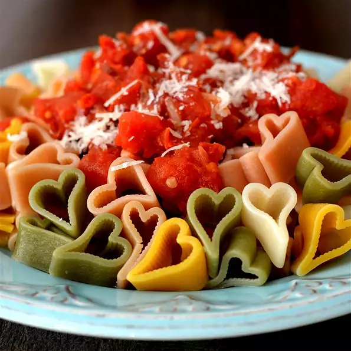

Bucatini All'Amatriciana

Description
Sugo all'amatriciana, or alla matriciana, also known as salsa all'amatriciana, is a traditional Italian pasta
sauce based on guanciale, pecorino romano cheese, tomato, and, in some variations, onion. Originating from the
town of Amatrice, the Amatriciana is one of the best known pasta sauces in present-day Roman and
Italian cuisine. The Italian government has named it a traditional agro-alimentary product of Lazio and
Amatriciana tradizionale is registered as a Traditional Speciality Guaranteed in the EU and the UK.
Ingredients
- 5 ounces bucatini pasta
- 1/4 cup extra-virgin olive oil
- 3 crushed garlic cloves
- 1 1/2 ounces guanciale (cured pork cheek), sliced
- 1/4 cup sliced red onion
- 1 pinch red pepper flakes
- 1/2 (8 ounces) can crushed San Marzano tomatoes
- salt and ground black pepper to taste
- 1 ounce freshly grated Pecorino Romano cheese
Steps
- Step 1: Fill a large pot with lightly salted water and bring to a rolling boil.
Stir in bucatini and return to a boil. Cook, uncovered, stirring occasionally, until bucatini is tender,
about 11 minutes. Drain.
- Step 2: Heat oil in a large skillet over medium-high heat. Add garlic cloves; cook until
golden brown, about 1 minute. Remove with a slotted spoon and discard. Add guanciale; cook and stir until
crisp and golden, about 4 minutes. Add onion and red pepper flakes; cook and stir until onion is
translucent, about 3 minutes. Stir in tomatoes, salt, and black pepper. Simmer tomato sauce until flavors
combine, about 10 minutes.
- Step 3: Stir bucatini and Pecorino Romano cheese into tomato sauce and toss until evenly
coated.